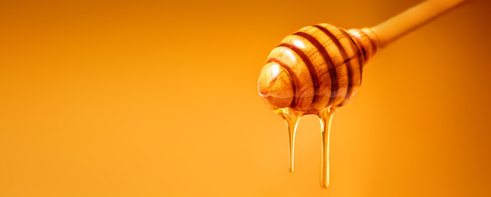

A apicultura é a ciência, ou arte, da criação de abelhas com ferrão. A criação racional de abelhas para o lazer, ou fins comerciais, pode ter como objetivo, por exemplo, a produção de mel, própolis, geleia real, pólen, cera de abelha e veneno, ou mesmo fazer parte de um projeto de paisagismo.
A temperatura e umidade do ambiente durante a extração de mel implicam diretamente na qualidade do produto. Os fatores citados podem limitar as quantias finais de produção caso não haja a supervisão adequada. O nosso objetivo é otimizar processos de extração e produção de mel através do monitoramento de temperatura e umidade ambientes.
